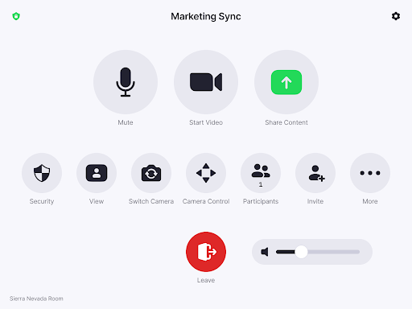

<!DOCTYPE html>
<html lang="en">
<head>
    <meta charset="UTF-8">
    <meta http-equiv="X-UA-Compatible" content="IE=edge">
    <!-- for optimal display on high DPI devices -->
    <meta name="viewport" content="width=device-width, initial-scale=1.0" />
    <link rel="stylesheet" href="https://cdn.jsdelivr.net/npm/@photo-sphere-viewer/core/index.min.css" />
    <!-- imports for plugins -->
    <link rel="stylesheet" href="https://cdn.jsdelivr.net/npm/@photo-sphere-viewer/markers-plugin/index.min.css" />
    <link rel="stylesheet" href='https://cdn.jsdelivr.net/npm/@photo-sphere-viewer/virtual-tour-plugin@5/index.css'>
     <!-- custom css -->
    <link rel="stylesheet" href="style.css">
    <title>PhotoSphere Test LiU</title>
</head>
<body>
    <div id="container"></div>
    <script type="text/template" id="t1--content">
        <div id="neatbar--container" class="neat">
            
            <h1>neat.bar</h1>
            <p>Neat Bar is a simple and elegant, compactly designed yet highly capable meeting room device for Zoom or Microsoft Teams.</p>
        </div>
    </script>
    <script type="text/template" id="t2--content">
        <div id="neatpad--container" class="neat">
            
            <h1>neat.pad</h1>
            <p>Neat Pad is a simple and elegant touch screen which you can use to control your meetings or display room availability outside the room. With its sleek design, including ideal screen angle for smooth interaction and viewing, </p>
        </div>
    </script>

    <!-- <script type="importmap">
        {
            "imports": {
                "three": "https://cdn.jsdelivr.net/npm/three/build/three.module.js",
                "@photo-sphere-viewer/core": "https://cdn.jsdelivr.net/npm/@photo-sphere-viewer/core@5/index.module.js",
                "@photo-sphere-viewer/virtual-tour-plugin": "https://cdn.jsdelivr.net/npm/@photo-sphere-viewer/virtual-tour-plugin@5/index.module.js",
                "@photo-sphere-viewer/gallery-plugin": "https://cdn.jsdelivr.net/npm/@photo-sphere-viewer/gallery-plugin@5/index.module.js",
                "@photo-sphere-viewer/markers-plugin": "https://cdn.jsdelivr.net/npm/@photo-sphere-viewer/markers-plugin@5/index.module.js"
            }
        }
    </script> -->
    <script src="https://cdn.jsdelivr.net/npm/three/build/three.min.js" ></script>
    <script src="https://cdn.jsdelivr.net/npm/@photo-sphere-viewer/core/index.min.js" ></script>
    <script src="https://cdn.jsdelivr.net/npm/@photo-sphere-viewer/markers-plugin/index.min.js"></script>
    <script src="https://cdn.jsdelivr.net/npm/@photo-sphere-viewer/virtual-tour-plugin@5/index.min.js"></script>
    <script src="photo-sphere.js" ></script>


</body>
</html>